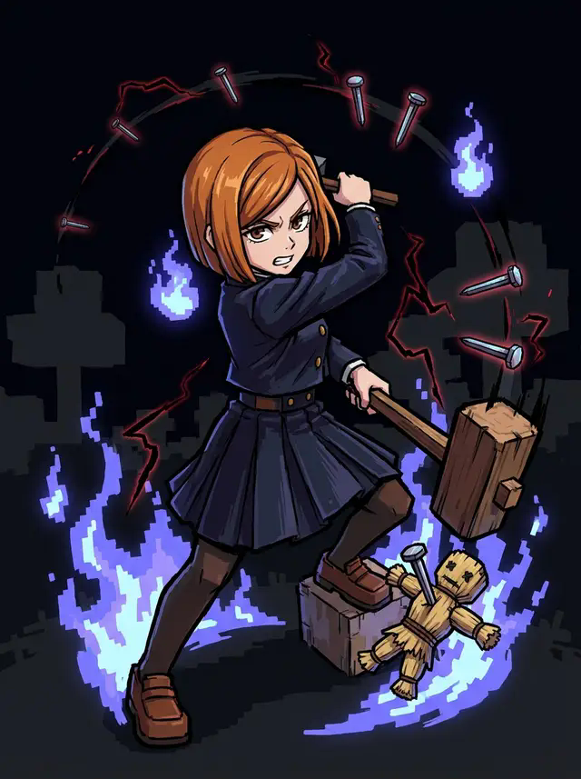

Нобара Кугисаки
Молот, гвозди и соломенная кукла. Каждый гвоздь в цели — это обещание следующего удара.
- RШпилькаНаправленный взрыв гвоздей, торчащих в цели.
- BМега-гвоздьВсе гвозди в цели сливаются в один пробивающий удар.
- Shift RРезонансУдар по кукле бьёт по душе. Мир на миг замирает — честный хит-стоп.
- Shift BЛовушка из гвоздейРасставь гвозди заранее и заведи врага на них.
- ЛКММолотКонтекстный ближний бой и шанс на Чёрную молнию.
Цели с твоими гвоздями подсвечиваются меткой, которую видишь только ты. Гвоздь в цели живёт минуту, максимум 30 на владельца. При выборе Нобары недостающий стартовый набор возвращается без дублей.